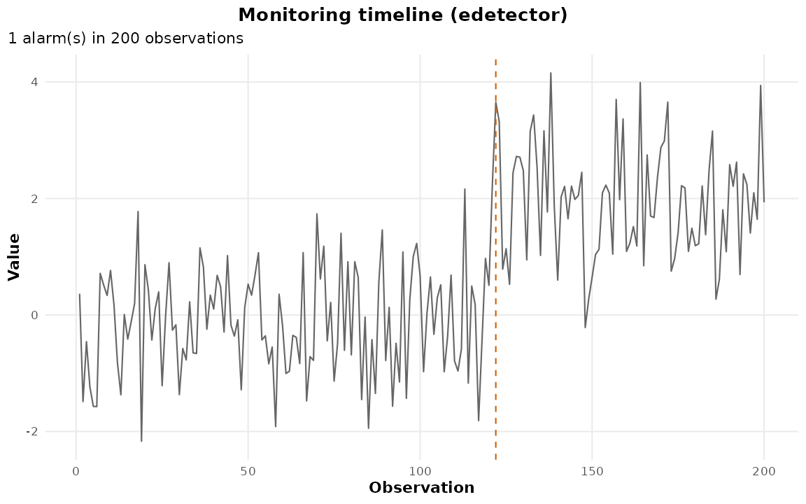
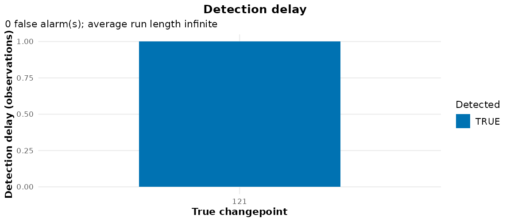

Streaming and Online Monitoring
Youzhi
Yu
University of Chicago
Source: vignettes/monitoring.Rmd
monitoring.RmdEvery other vignette in this package segments a series that is already complete. This one does not. A monitor consumes observations as they arrive, and the question it answers is not where was the change but how long did you take to notice, and how often do you cry wolf. Those are different quantities, they are scored differently, and conflating them is the commonest mistake made with online detectors — including by retrospective plots that draw an alarm time as though it were a changepoint location.
So a monitor is a different object from a segmentation. Five functions:
| Function | What it does |
|---|---|
cpt_monitor() |
build a stateful detector from a clean baseline |
cpt_update() |
push new observations through it |
alarms() |
the alarm log: when it fired, and on what statistic |
cpt_delay() |
score it — detection delay and false alarms |
cpt_replay() |
run a whole series through in one call |
1. A monitor, one batch at a time
Start from a baseline the detector may assume is in control.
edetector and ocd estimate their reference
mean and scale from it; cpm derives its own from a start-up
period and so does not need one.
set.seed(2026)
baseline <- rnorm(200)
mon <- cpt_monitor("edetector", baseline = baseline, alpha = 0.002)
mon
#> ggcpt_monitor (edetector -- native implementation)
#> Baseline observations: 200
#> Monitored observations: 0
#> Alarms: 0
#> Restart after alarm: TRUE (re-learning 20 observations)Nothing has been monitored yet. Now feed it 120 observations from the same distribution — the in-control case, where the right answer is silence:
set.seed(5201)
mon <- cpt_update(mon, rnorm(120))
mon
#> ggcpt_monitor (edetector -- native implementation)
#> Baseline observations: 200
#> Monitored observations: 120
#> Alarms: 0
#> Restart after alarm: TRUE (re-learning 20 observations)Then a change arrives. The mean shifts by two standard deviations at observation 121 of the monitored stream, and the monitor sees it only one observation at a time:
set.seed(5202)
mon <- cpt_update(mon, rnorm(80, mean = 2))
alarms(mon)
#> # A tibble: 1 × 3
#> time statistic threshold
#> <int> <dbl> <dbl>
#> 1 122 969. 500The idiom is mon <- cpt_update(mon, new_obs): the
monitor is returned because it is stateful, and each call appends to the
same alarm log. The time column counts observations fed to
the monitor, so the baseline is not on the clock.
2. Scoring: delay, not location
cpt_delay() matches each alarm to the change it
plausibly detected, and counts the rest as false alarms.
d <- cpt_delay(mon, truth = 121)
d
#> ggcpt_delay
#> True changes: 1
#> Detected: 1
#> Mean delay: 1
#> Median delay: 1
#> False alarms: 0
#> Average run length: no false alarms
#>
#> # A tibble: 1 × 4
#> truth alarm delay detected
#> <int> <int> <dbl> <lgl>
#> 1 121 122 1 TRUERead the three numbers that matter. Delay is how many observations passed between the change and the first alarm after it. False alarms are the alarms with no change behind them. Average run length is observations per false alarm — the in-control cost of running the monitor, and the quantity the thresholds are calibrated against.
Note what happened to the second alarm. Only the first alarm
after a change counts as the detection, so the later one is charged as a
false alarm even though the shift causing it is real. That is the right
accounting for a monitor whose job is to raise one flag per change, and
it is also a hint about relearn, which section 6 returns
to.
tidy() and glance() give the same content
as data:
glance(d)
#> # A tibble: 1 × 7
#> n_changes n_detected mean_delay median_delay n_false_alarms arl n_obs
#> <int> <int> <dbl> <dbl> <int> <dbl> <int>
#> 1 1 1 1 1 0 Inf 200cpt_metrics() is the wrong tool here. It asks whether
the location was recovered, which a sequential procedure never
claims: an alarm is deliberately late, so scoring it as a location
estimate marks a correct detection wrong by exactly the delay.
autoplot(mon)
autoplot(d)
3. Replaying a finished series
cpt_replay() does the update loop for you: it takes the
leading observations as the baseline, streams the rest, and returns the
same monitor object. This is how to study an online method’s alarm
timeline retrospectively without pretending its alarms are
changepoints.
set.seed(5203)
stream <- c(rnorm(200), rnorm(200, mean = 2))
rep_e <- cpt_replay(stream, method = "edetector")
alarms(rep_e)
#> # A tibble: 2 × 3
#> time statistic threshold
#> <int> <dbl> <dbl>
#> 1 101 2101. 100
#> 2 145 436. 100The baseline offset is applied automatically, so truth
is on the original clock of stream:
4. The three methods
edetector — the default, governed by
alpha
A mixture Shiryaev–Roberts e-detector for a sub-Gaussian shift (Shin et al. 2023). For each candidate shift the
increment is a likelihood ratio with unit mean under the null; the
running statistics are combined by averaging, which
keeps
a mean-zero martingale, so optional stopping gives
— a finite-sample lower bound on the in-control average run length, with
no calibration run. It is the one detector in this package implemented
here rather than wrapped, because no R package implements e-detectors;
print() labels it as such.
deltas is the set of shift sizes mixed over, in baseline
standard deviations, each taken in both directions. The mixture is a
uniform average, so adding a shift costs power at the ones already there
rather than inflating the false-alarm rate — and betting on the wrong
one is expensive. Eight replicates, median delay:
set.seed(2026)
delay_at <- function(deltas, shift, reps = 8, n = 200) {
v <- vapply(seq_len(reps), function(i) {
s <- c(rnorm(n), rnorm(n, mean = shift))
cpt_delay(cpt_replay(s, method = "edetector", deltas = deltas),
truth = n)$median_delay
}, numeric(1))
median(v, na.rm = TRUE)
}
data.frame(
shift = c(0.75, 3),
mixture_0.5_1_2 = c(delay_at(c(0.5, 1, 2), 0.75), delay_at(c(0.5, 1, 2), 3)),
only_0.5 = c(delay_at(0.5, 0.75), delay_at(0.5, 3)),
only_3 = c(delay_at(3, 0.75), delay_at(3, 3))
)
#> shift mixture_0.5_1_2 only_0.5 only_3
#> 1 0.75 14.5 11.0 37
#> 2 3.00 2.0 4.5 2A detector that mixes only over a 3-sigma shift takes several times as long to notice a 0.75-sigma one, while the mixture is close to the best single choice at both sizes. That is the argument for mixing: it buys robustness to not knowing the change size, at a small cost when you do.
cpm — governed by arl0
cpm’s sequential change-point model (Ross 2015), with a distribution-free statistic
(cpm_type, "Mann-Whitney" by default) and a
threshold calibrated to a target in-control average run length.
set.seed(5204)
mon_cpm <- cpt_monitor("cpm", arl0 = 500)
mon_cpm <- cpt_update(mon_cpm, rnorm(120))
mon_cpm <- cpt_update(mon_cpm, rnorm(80, mean = 2))
alarms(mon_cpm)
#> # A tibble: 1 × 3
#> time statistic threshold
#> <int> <dbl> <dbl>
#> 1 125 0 NA
glance(cpt_delay(mon_cpm, truth = 121))
#> # A tibble: 1 × 7
#> n_changes n_detected mean_delay median_delay n_false_alarms arl n_obs
#> <int> <int> <dbl> <dbl> <int> <dbl> <int>
#> 1 1 1 4 4 0 Inf 200cpm does the threshold comparison inside the engine, so
threshold is NA in its alarm log rather than
an invented number, and the statistic column is not
informative for it either. The alarm time is the whole signal
from cpm; the statistic trace is what
edetector and ocd provide and cpm
does not.
alpha and arl0 are alternative
parameterisations, not two knobs
cpt_monitor() exposes both because the two engines are
calibrated in different currencies, and each ignores the other’s.
edetector honours alpha (its
threshold is
);
cpm honours arl0. Setting
arl0 on an e-detector, or alpha on
cpm, changes nothing.
set.seed(5205)
ic <- rnorm(400)
vapply(c(0.05, 0.01, 0.001),
function(a) nrow(alarms(cpt_replay(ic, method = "edetector",
alpha = a))),
numeric(1))
#> [1] 3 1 0
nrow(alarms(cpt_replay(ic, method = "edetector", arl0 = 5000)))
#> Warning: `arl0` does not affect `method = "edetector"`, which is tuned by
#> `alpha`, `deltas`. See ?cpt_monitor.
#> [1] 1Three alphas, three false-alarm counts; then arl0 = 5000
on the same stream, which reproduces the default-alpha
result exactly because the argument is not read – and
cpt_monitor() says so, because an argument that is accepted
and then ignored is worth a warning rather than an unchanged answer. The
rough translation is
, so alpha = 0.002
and arl0 = 500 ask for comparable strictness.
ocd — multivariate only
ocd’s high-dimensional multiscale detector (Chen et al. 2022) tracks a projection of the
whole vector, and requires at least two coordinates. On
a single series it does not fall back to a univariate statistic; it
stops, and says which methods do read one series:
set.seed(5206)
cpt_monitor("ocd", baseline = rnorm(100))
#> Error:
#> ! Method `ocd` is high-dimensional and needs at least two coordinates, but `baseline` has 1. Use method = "edetector" or "cpm" for one series.Given a matrix with rows as time points it monitors all coordinates jointly, and the alarms are shared across them:
set.seed(11)
base_mv <- matrix(rnorm(200 * 3), ncol = 3)
mon_ocd <- cpt_monitor("ocd", baseline = base_mv, patience = 200,
mc_reps = 30)
stream_mv <- rbind(matrix(rnorm(60 * 3), ncol = 3),
matrix(rnorm(60 * 3, mean = 1.2), ncol = 3))
mon_ocd <- cpt_update(mon_ocd, stream_mv)
glance(cpt_delay(mon_ocd, truth = 61))
#> # A tibble: 1 × 7
#> n_changes n_detected mean_delay median_delay n_false_alarms arl n_obs
#> <int> <int> <dbl> <dbl> <int> <dbl> <int>
#> 1 1 1 5 5 0 Inf 120Two practical notes. The statistic reported is ocd’s
normalised statistic, already divided by its own threshold, so
the comparison point is 1 — printing the raw thresholds alongside it
would show an alarm at 1.10 against a threshold of 16.4 and read as a
bug. And the Monte Carlo threshold calibration is the expensive part of
building the monitor: a minute or more at the default
patience = 5000, which is why mc_reps is
lowered here. Pass thresh directly when you already have
thresholds.
5. Delay is a function of shift size
The whole point of an online detector is that a bigger change is noticed sooner. This is small enough to measure directly — ten replicates per cell, median over replicates:
set.seed(2026)
median_delay <- function(shift, method, reps = 10, n = 200) {
d <- vapply(seq_len(reps), function(i) {
s <- c(rnorm(n), rnorm(n, mean = shift))
cpt_delay(cpt_replay(s, method = method), truth = n)$median_delay
}, numeric(1))
median(d, na.rm = TRUE)
}
grid <- expand.grid(shift = c(1, 2, 3),
method = if (has_cpm) c("edetector", "cpm") else "edetector",
stringsAsFactors = FALSE)
grid$median_delay <- mapply(median_delay, grid$shift, grid$method)
grid
#> shift method median_delay
#> 1 1 edetector 7.0
#> 2 2 edetector 4.0
#> 3 3 edetector 1.5
#> 4 1 cpm 9.0
#> 5 2 cpm 4.5
#> 6 3 cpm 4.0Ten replicates is a noisy estimate of a median, and the table above
will wobble with the seed. A larger run of the same design — 150
replicates per cell, repeated under two seeds — gives median detection
delays of 7, 3 and 2 observations for
edetector at shifts of 1, 2 and 3 standard deviations, and
10, 5 and 4 for cpm. Two things are worth
taking from that. Delay falls steeply in the shift size, so a monitor
tuned on a large change will feel unusably slow on a small one. And the
gap between the two detectors is real but modest where the change is
small: two or three observations at 1 sigma, against inter-quartile
ranges of [5, 12] and [7, 15] that overlap almost entirely — while
edetector is clearly and consistently quicker once the
change is obvious.
6. Assumptions: the thresholds are for independent observations
Both calibrations — the e-detector’s
bound and cpm’s arl0 — assume the in-control
observations are independent. Under the null on iid noise they hold up.
Measured on 2000-observation in-control streams at the defaults,
cpm raises about 3.7 false alarms against
the 4 that arl0 = 500 implies by construction, and
edetector about 13.
Serial dependence breaks both, and not gently. Autocorrelated noise wanders; a detector that reads a wander as a level shift alarms on it.
set.seed(3)
false_alarms <- function(method, gen, reps = 5, n = 400) {
mean(vapply(seq_len(reps),
function(i) nrow(alarms(cpt_replay(gen(n), method = method))),
numeric(1)))
}
iid <- function(n) rnorm(n)
ar1 <- function(n) as.numeric(stats::arima.sim(list(ar = 0.7), n))
methods <- if (has_cpm) c("edetector", "cpm") else "edetector"
data.frame(
method = methods,
iid = vapply(methods, false_alarms, numeric(1), gen = iid),
ar1_rho_0.7 = vapply(methods, false_alarms, numeric(1), gen = ar1),
row.names = NULL
)
#> method iid ar1_rho_0.7
#> 1 edetector 1.8 7.4
#> 2 cpm 0.6 6.2Both inflate badly at
,
cpm by roughly tenfold in a larger run of
the same comparison. Neither is broken — they are answering the question
they were calibrated for — but a nominal arl0 = 500 on
autocorrelated data is not a 500-observation run length, and reporting
it as one overstates the evidence behind every alarm. The options, in
order of how much they ask of you:
- Pre-whiten. Fit an AR model to the baseline and monitor the residuals. Cheap, and it restores the calibration when the model is about right.
- Aggregate. Monitor block means rather than raw observations. The dependence between blocks is weaker; the cost is delay measured in blocks.
-
Recalibrate empirically. Simulate in-control
streams with the dependence you actually have, and set
alphaorarl0to the level that delivers the run length you want. This is the honest route when the noise model is not AR.
Two further assumptions, worth stating because they are easy to miss.
The baseline must be clean: edetector and
ocd take their reference mean and scale from it, so a
change inside the baseline is inherited as the in-control state and the
real change afterwards may be invisible. And relearn (20
observations by default) is not cosmetic. A real change is
persistent, so a monitor that restarts against the stale
pre-change baseline alarms again on the very next observation and keeps
alarming for the rest of the stream — reporting one change as hundreds,
all but the first of which cpt_delay() counts as false
alarms. Set relearn = 0 only when you want to see every
threshold crossing.
nrow(alarms(cpt_replay(stream, method = "edetector", relearn = 20)))
#> [1] 2
nrow(alarms(cpt_replay(stream, method = "edetector", relearn = 0)))
#> [1] 737. What to report
For an online analysis, the summary that belongs in a paper is
glance(cpt_delay(...)): how many changes there were, how
many were detected, the delay distribution, the false-alarm count and
the realised run length. A list of alarm times without the delay
accounting is not an evaluation, and a covering or F1 score computed
against alarm times is a category error. Delay against false alarms has
been the currency of sequential monitoring since Page (1954); the tooling here just makes the
accounting automatic.